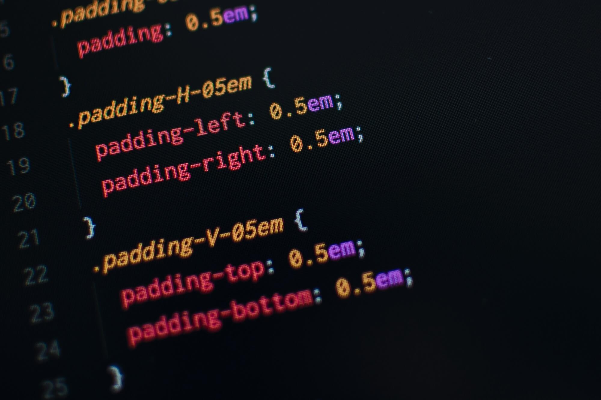

What is CSS?
CSS is a powerful tool that enables web developers to create visually appealing and responsive designs. It separates content from presentation, allowing for easier maintenance and updates.
Basic Syntax
CSS rules consist of selectors and declarations. A selector targets an HTML element, while declarations define the styles to be applied.
selector {
property: value; }For example:
h1 {
color: blue; }
p {
font-size: 16px; }Selectors
CSS selectors are patterns used to select the elements you want to style. Common selectors include:
- Element Selector: Selects all elements of a given type (e.g.,
pfor paragraphs). - Class Selector: Selects elements with a specific class (e.g.,
.classname). - ID Selector: Selects an element with a specific ID (e.g.,
#idname).
Box Model
The CSS box model describes the rectangular boxes generated for elements in the document tree. It consists of margins, borders, padding, and the actual content.
Responsive Design
Responsive design ensures that web pages look good on all devices, from desktops to smartphones. CSS media queries allow you to apply different styles based on the device's characteristics.
@media (max-width: 600px) {
body {
background-color: lightblue; } }This example changes the background color to light blue when the viewport width is 600 pixels or less.
Conclusion
CSS is an essential skill for web developers, enabling them to create visually appealing and user-friendly websites. By mastering CSS, you can enhance your web development skills and create stunning designs.
Resources
For more information on CSS, check out the following resources: